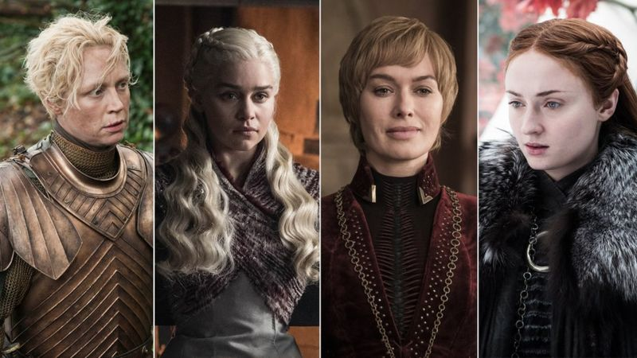
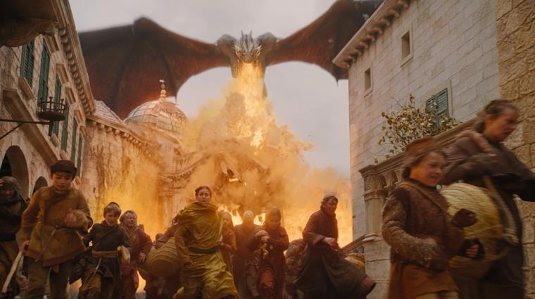
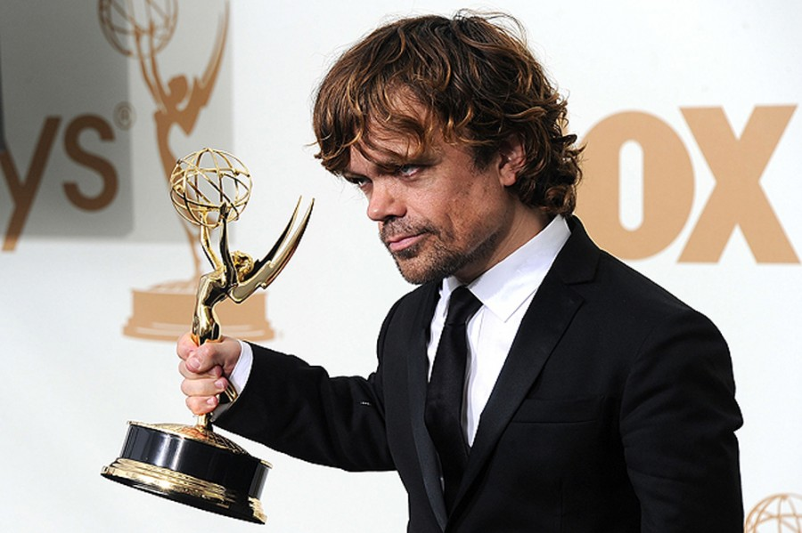
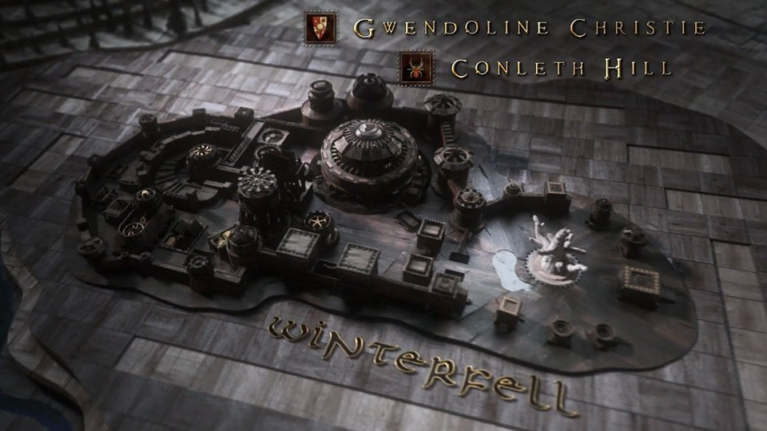
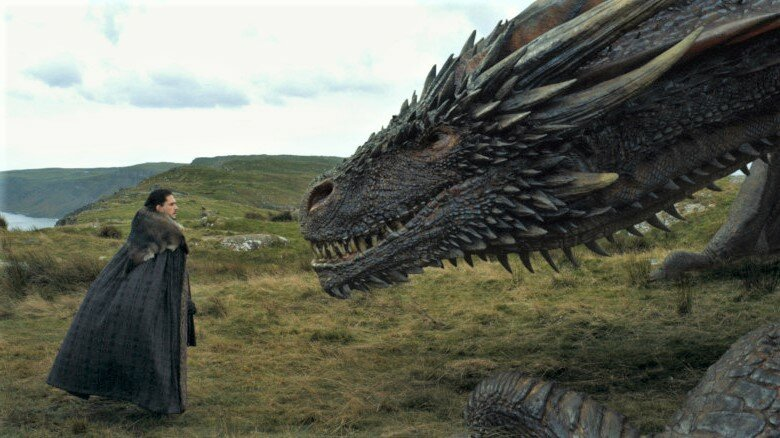

Самый обсуждаемый и рейтинговый проект
Снятая с поистине эпическим размахом "Игра престолов", вошла в историю как один из успешнейших и рейтинговых проектов. Каждый из эпизодов сериала, по сообщениям его создателей, посмотрело около 18 миллионов человек. Сериал транслировался в 150 странах мира, не стала исключением и тв программа Россия: сериал, а в особенности 8-й сезон, стал самым обсуждаемым событием. Предлагаем подборку самых любопытных фактов о популярной саге.
"Игра престолов" – ода феминизму
Это единственная эпопея в жанре фэнтези, где женские персонажи более яркие, интересные и сильные, чем мужчины. В финальную борьбу за Железный трон вступают две соперницы: Серсея и Дейнерис, тогда как все мужчины выбыли из игры. Когда автора саги упрекают в чрезмерном потакании женщинам, Джордж Мартин говорит о себе: "Я феминист".
Рекорд по количеству смертей и горящих каскадеров
Фанаты сериала насчитали в эпопее 174373 смертельных сцены. В это число вошли и герои массовки, и животные: драконы, лютоволки, лошади. В одном из интервью Мартин признался, что жена пригрозила ему разводом, если погибнет Санса или Арья. Во время съемок серии "Трофеи войны", на площадке одновременно находилось 20 каскадеров, объятых пламенем. Этот факт зафиксирован в "Книге рекордов Гиннеса".
Питер Динклэйдж не проходил кастинг
Единственная роль, на которую создатели проекта не объявляли кастинг – Тирион Ланнистер. В этой роли продюсеры изначально представляли только Питера Динклэйджа. Он не только принял предложение, но и предложил свою приятельницу Лину Хиди на роль своей экранной сестры, королевы Серсеи.
Заставка сериала получила "Эмми"
Трехмерная заставка сериала удостоилась отдельной премии "Эмми". Анимация обновлялась для каждого сезона: добавлялись новые земли, символы, гербы правящих династий. Над созданием заставки трудились 10 человек, и для воплощения каждого нового варианта требовалось 3 месяца.
Драконы – "гибрид" трех реальных животных
При создании драконов, мастера спецэффектов использовали в качестве прототипов реальных животных. Движение крыльев скопированы с полета летучей мыши, для передвижения драконов на земле использована походка гусей, а когда Дейенерис гладит своих питомцев, их повадки напоминают кошачьи.